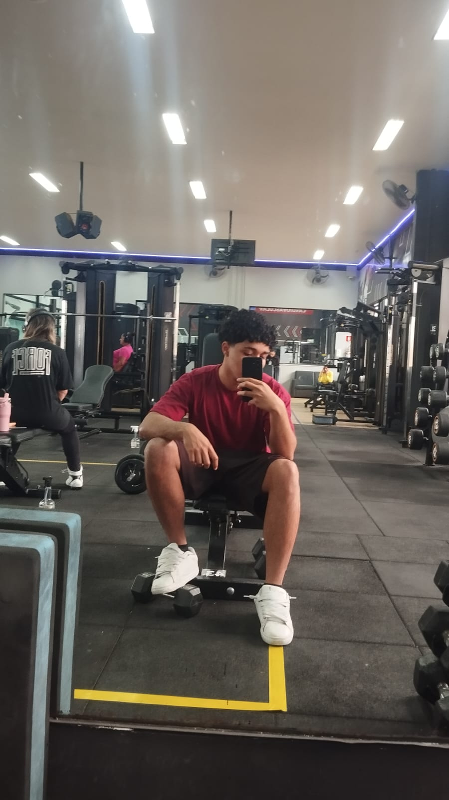
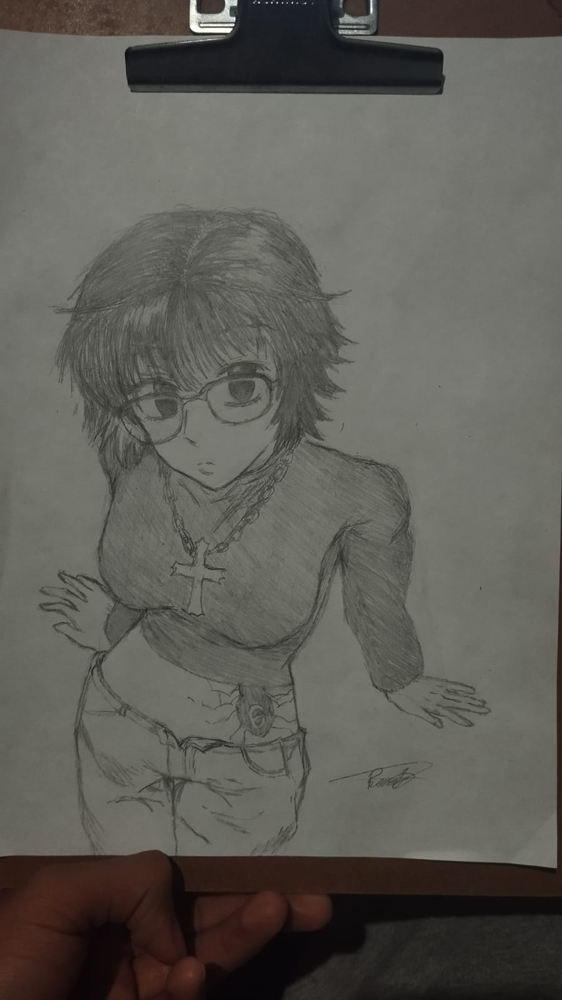

Minha comida favorita

A feijoada é um dos pratos mais tradicionais do Brasil, mas sua origem mistura influências europeias, indígenas e africanas. Ela surgiu da adaptação do cozido português, que utilizava carnes variadas com feijão branco, para a realidade colonial brasileira, onde o feijão preto era mais comum. Os escravizados africanos também tiveram grande papel na disseminação do prato, aproveitando partes menos nobres do porco, como orelha, pé e rabo, que eram cozidas junto ao feijão, criando uma refeição nutritiva e saborosa. Com o tempo, a feijoada deixou de ser apenas uma comida popular e se tornou símbolo da cultura brasileira, consumida em reuniões familiares e celebrações em todo o país.
Meu hobby/passatempo favorito


Eu gosto de ir para a academia porque, além de cuidar da minha saúde, é um passatempo que me dá energia, confiança e uma sensação de superação a cada treino. Estar lá me ajuda a liberar o estresse, organizar os pensamentos e me sentir mais disposto no dia a dia, transformando o exercício em algo prazeroso, e não apenas uma obrigação. Já o desenho é meu hobby favorito porque me permite expressar minha criatividade e emoções de uma forma única, transformando ideias em traços no papel. Quando desenho, consigo relaxar, entrar no meu próprio mundo e mostrar um pouco de quem sou através da arte, o que torna essa prática especial e significativa para mim.
Um lugar que quero conhecer
Paris

Eu gostaria de conhecer Paris porque sempre imaginei como deve ser incrível caminhar pelas ruas cheias de história e ver de perto lugares que só conheço por fotos, como a Torre Eiffel e o Museu do Louvre. A cidade me encanta pelo seu ar romântico, pela arquitetura charmosa e pela atmosfera cultural que parece estar em cada esquina. Também tenho curiosidade de experimentar a gastronomia, os cafés e a forma como os parisienses vivem o dia a dia. Acho que estar em Paris seria como realizar um sonho, unindo aprendizado, inspiração e momentos que ficariam guardados para sempre na memória.
Filme favorito
Lala Land
La La Land conta a história de Mia (Emma Stone), uma aspirante a atriz, e Sebastian (Ryan Gosling), um pianista apaixonado por jazz, que vivem um intenso romance enquanto tentam realizar seus sonhos em Los Angeles. O filme é um musical moderno que mistura paixão, arte e as escolhas difíceis entre amor e carreira. Um dos momentos mais marcantes é o reencontro final, quando Mia, já famosa, entra no clube de jazz de Sebastian e o vê tocando piano. Nesse instante, a música transporta os dois para uma sequência imaginária que mostra como teria sido a vida deles juntos se tivessem escolhido o amor em vez dos sonhos individuais. É uma cena emocionante, pois mostra a beleza e a dor das escolhas, deixando no ar uma mistura de nostalgia, ternura e saudade.
Melhores personagens
*O filme gira entorno desse dois personagens
Atores que deram vida ao filme
/i.s3.glbimg.com/v1/AUTH_e7c91519bbbb4fadb4e509085746275d/internal_photos/bs/2024/j/Z/YbndDrRmSy95HJtNz1OQ/lalaland.png)
Ryan Gosling e Emma Stone são dois atores talentosos e carismáticos que conquistaram o público com performances memoráveis no cinema. Ryan é conhecido por seu charme discreto, versatilidade e intensidade em papéis que vão do romance ao drama, enquanto Emma se destaca por sua expressividade, timing cômico e habilidade de dar profundidade emocional às personagens. Juntos, em filmes como La La Land, criam uma química incrível na tela, tornando seus personagens inesquecíveis e fazendo o público se envolver profundamente com suas histórias. Fora das telas, ambos são admirados por sua dedicação à arte e pela forma autêntica como lidam com a fama, ganhando respeito tanto de fãs quanto da crítica.
Cantor favorito
Matuê

História
Matuê, cujo nome verdadeiro é Matheus Brasileiro Aguiar, nasceu em Fortaleza, Ceará, e teve uma trajetória marcada por desafios e dedicação à música desde cedo. Cresceu em um ambiente onde a cultura do rap e do hip hop estava presente, e começou a escrever suas primeiras letras ainda adolescente, usando a música como forma de expressar suas experiências e sonhos. Seu estilo combina trap, rap e melodias próprias, criando uma identidade única que se conecta com a juventude brasileira. Matué começou a ganhar atenção em 2017 com o sucesso de faixas como “RBN”, e em 2019, com “Kenny G”, alcançou grande repercussão nacional, mostrando maturidade e inovação em suas produções. Lançamentos subsequentes, como o álbum “Máquina do Tempo”, consolidaram sua carreira e o posicionaram como um dos artistas mais influentes do trap brasileiro, abordando temas como superação, ambição e a realidade das periferias de forma autêntica e impactante.
Músicas
As músicas de Matuê são marcadas por uma mistura de trap, rap e elementos melódicos que refletem sua personalidade e experiência de vida. Entre seus maiores sucessos estão “Kenny G”, que o projetou nacionalmente, “Máquina do Tempo”, que dá nome ao seu álbum e mostra seu estilo único, e “Vampiro”, que mistura intensidade e emoção. Suas letras abordam temas como ambição, superação, amor, conquistas e desafios da vida nas periferias, sempre com uma autenticidade que conecta diretamente com os jovens. Além disso, Matué é conhecido por suas batidas envolventes e flow marcante, que tornam cada faixa não apenas uma música, mas uma expressão de sua trajetória e visão de mundo.
Eu gosto do Matuê porque suas músicas têm uma energia única que mistura emoção, estilo e realidade de forma que consigo me identificar. Admiro a forma como ele transforma experiências pessoais e desafios da vida em letras criativas e autênticas, com batidas que prendem a atenção e um flow marcante que é impossível de ignorar. Além disso, gosto de como ele consegue transmitir sentimentos de superação, ambição e liberdade, fazendo com que cada música seja não apenas entretenimento, mas também inspiração e reflexão sobre sonhos e conquistas.
Melhores Músicas
- Gorila Roxo - Parte do albúm: Máquina do Tempo
- Antes - Parte do albúm: Máquina do Tempo
- Anos Luz - Single
- 333 - Parte do albúm: 333
- A Última Dança - Parte da MixTape Sabor Overdose no Yakisoba